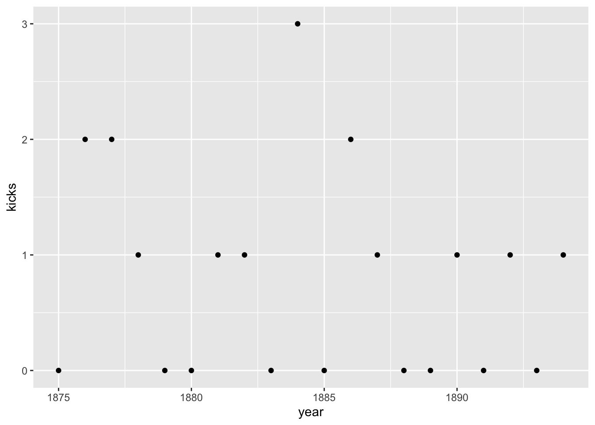
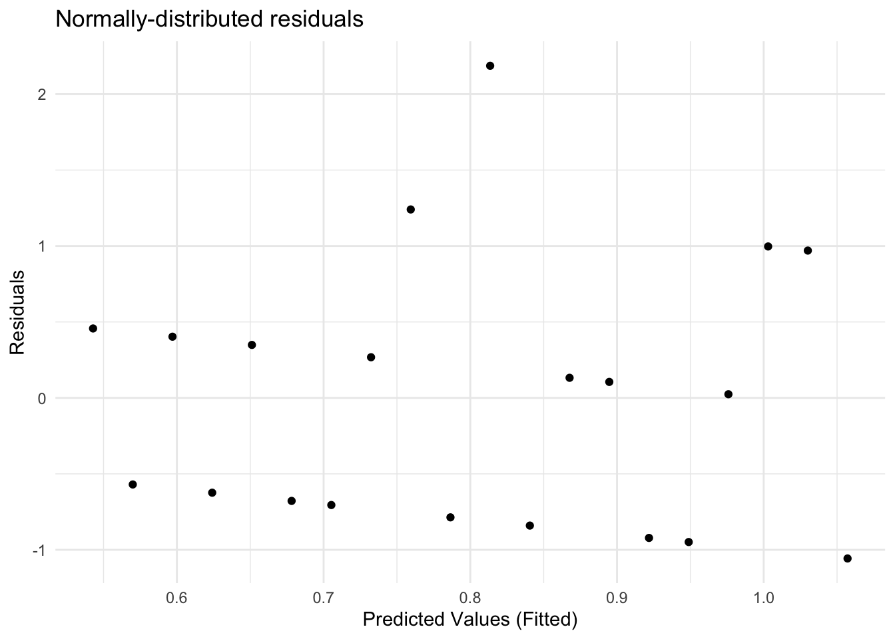
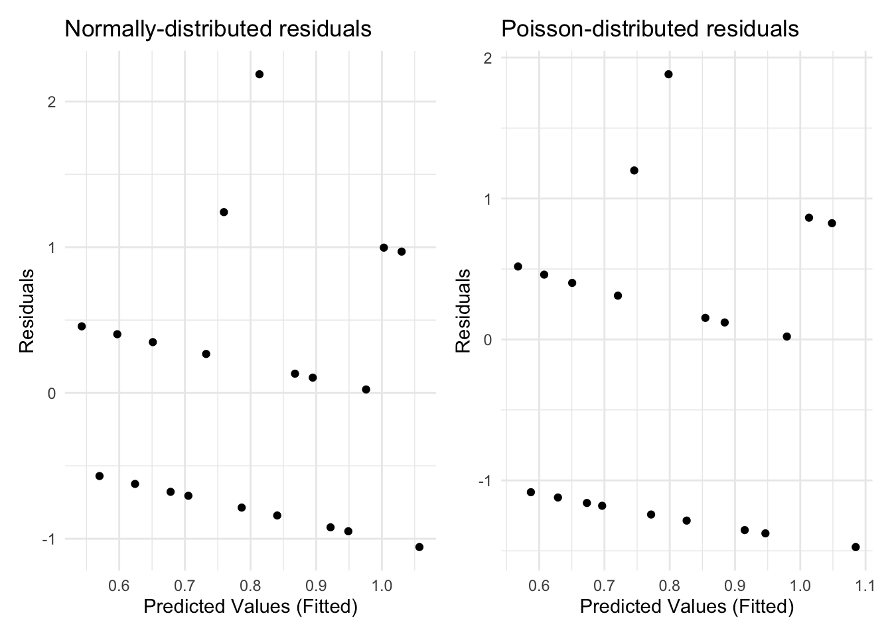
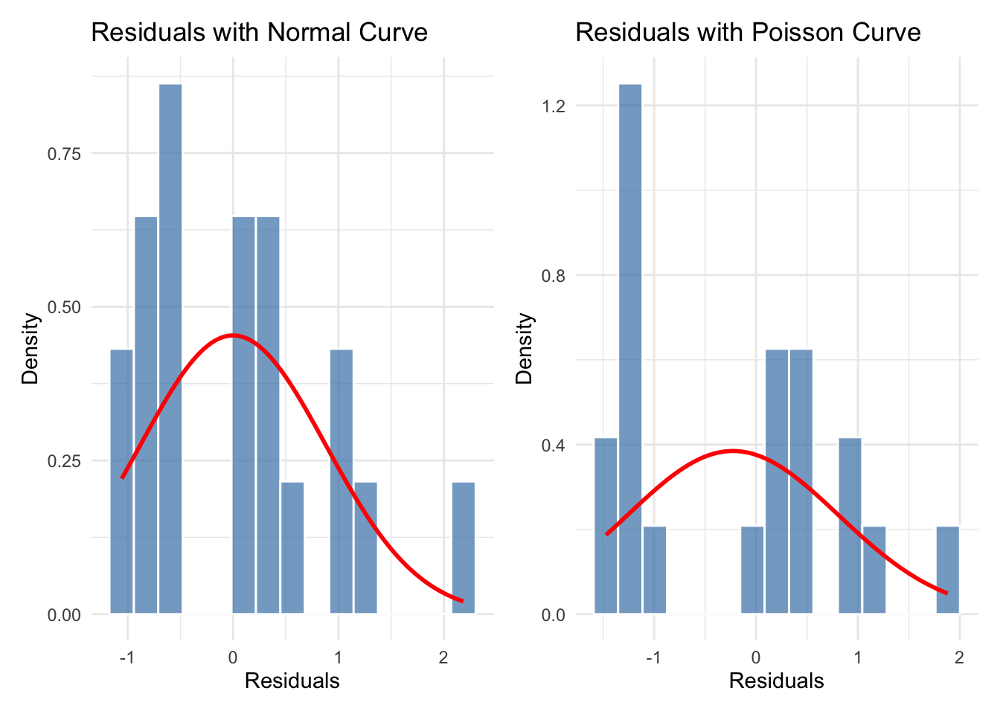
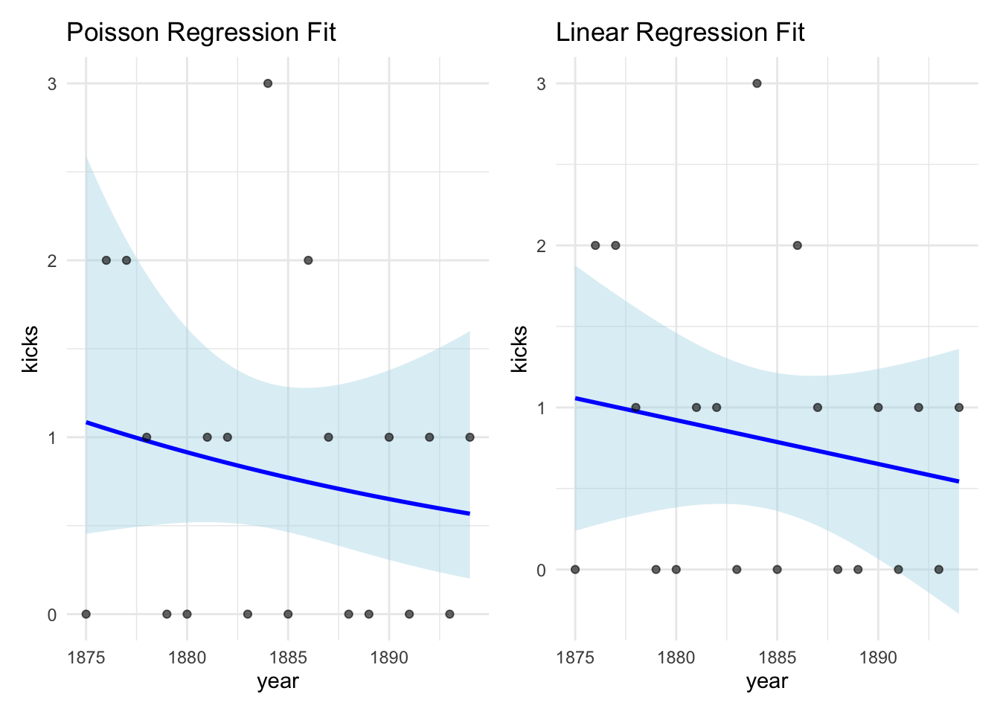

33 Fri Nov 27 - Goodness of fit tests and Poisson regression
33.1 Goodness of fit
This lecture is based on Ch 16.3 of Dr. Schneider’s notes.
These data are quite straightforward, so I will code them into R directly, rather than load a data file from the internet as we have done in all the other examples.
## colour counts
## 1 purple 705
## 2 white 224The error distribution is Poisson. A binomial error structure is appropriate and was demonstrate by McCullagh and Nelder; however, this does not feature in the analysis.
We want to test if this colours of the flowers differs from a 3:1 ratio.
expected = c((3/4)*(705+224), (1/4)*(705+224))
flower.data = data.frame(flower.data,expected)
flower.data## colour counts expected
## 1 purple 705 696.75
## 2 white 224 232.25require(dplyr)
flower.data = flower.data%>%mutate(difference2.expected = (counts - expected)^2/expected)
flower.data## colour counts expected difference2.expected
## 1 purple 705 696.75 0.09768568
## 2 white 224 232.25 0.29305705## [1] 0.3907427The \(X^2\) statistics is chi-square distributed with 1 degree of freedom. There is one degree of freedom because no df’s are used in the biologically-motivated hypothesis of a 3:1 ratio. There is one df from the data because there are two reported values that are constrained in that we are considering the fraction of white and purple flowers, where this fraction must sum to 1.
## [1] 0.4680908We conclude that the observaed data is not different than a 3:1 ratio.
33.1.1 G-statistic
The modern measure of goodness of fit is the likelihood ratio Chisquare, written either as G or as G\(^2\). The G-statistic is based on the solid theoretical underpinning of likelihood (Fisher 1935) , which considers the likelihood of the model given of the data.
\[ G = 2\ln LR \]
## colour counts expected difference2.expected logLR
## 1 purple 705 696.75 0.09768568 8.298651
## 2 white 224 232.25 0.29305705 -8.101705## [1] 0.3938924## [1] 1.217679All of these results suggest that the pea data follows a 3:1 ratio. We cannot test the assumptions of residuals because we have
33.2 Poisson regression
This lecture follows Ch 17.1 of Dr. Schneider’s notes.
horse.kicks = read.csv("https://raw.githubusercontent.com/ahurford/biol-4605-data/refs/heads/main/data/horse-kick.csv")
horse.kicks## year kicks
## 1 1875 0
## 2 1876 2
## 3 1877 2
## 4 1878 1
## 5 1879 0
## 6 1880 0
## 7 1881 1
## 8 1882 1
## 9 1883 0
## 10 1884 3
## 11 1885 0
## 12 1886 2
## 13 1887 1
## 14 1888 0
## 15 1889 0
## 16 1890 1
## 17 1891 0
## 18 1892 1
## 19 1893 0
## 20 1894 1These data are Poisson-distributed because the number of trials is not fixed (as data on the number of possible kicks is not reported). These counts are also small such that approximating the Poisson distribution with a normal distribution is not likely to be reasonable.

Verbal model Is the number of kicks resulting in death showing a trend from 1874 to 1895 (increasing or decreasing)?
For our information, let’s consider the GLM and see how the residual vs. fitted plot might look.
# 1. Fit the linear regression
kick.model <- lm(kicks ~ year, data = horse.kicks)
# 2. Create data frame holding just the predicted and residual values
plot_data <- data.frame(
predicted = fitted(kick.model),
residuals = residuals(kick.model)
)
# 3. Build the ggplot
g1=ggplot(plot_data, aes(x = predicted, y = residuals)) +
geom_point(color = "black") +
labs(
title = "Normally-distributed residuals",
x = "Predicted Values (Fitted)",
y = "Residuals"
) +
theme_minimal()
g1
This plot doesn’t look particularly different than plots that we have said are OK, but these small counts definitely suggest the Poisson-distribution is more appropriate.
We need to fit the Poisson regression to assess this assumption:
require(patchwork) # is nice to combine figure panels
#1. Fit the Poisson regression
poisson.model <- glm(kicks ~ year,
family = poisson(link = log), data = horse.kicks)
# 2. Create data frame holding just the predicted and residual values
plot_data <- data.frame(
predicted = fitted(poisson.model),
residuals = residuals(poisson.model)
)
# 3. Build the ggplot
g2=ggplot(plot_data, aes(x = predicted, y = residuals)) +
geom_point(color = "black") +
labs(
title = "Poisson-distributed residuals",
x = "Predicted Values (Fitted)",
y = "Residuals"
) +
theme_minimal()
g1+g2
library(ggplot2)
res_df <- data.frame(resid = residuals(kick.model))
g3=ggplot(res_df, aes(x = resid)) +
geom_histogram(aes(y = after_stat(density)), bins = 15, fill = "steelblue", color = "white", alpha = 0.7) +
stat_function(
fun = dnorm,
args = list(mean = mean(res_df$resid), sd = sd(res_df$resid)),
color = "red",
linewidth = 1
) +
labs(
title = "Residuals with Normal Curve",
x = "Residuals",
y = "Density"
) +
theme_minimal()
pois_res_df <- data.frame(resid = residuals(poisson.model, type = "deviance"))
g4 <- ggplot(pois_res_df, aes(x = resid)) +
geom_histogram(
aes(y = after_stat(density)),
bins = 15,
fill = "steelblue",
color = "white",
alpha = 0.7
) +
stat_function(
fun = dnorm,
args = list(mean = mean(pois_res_df$resid), sd = sd(pois_res_df$resid)),
color = "red",
linewidth = 1
)+ labs(
title = "Residuals with Poisson Curve",
x = "Residuals",
y = "Density"
) +
theme_minimal()
g3+g4
Again, it is not obvious from this plot to test the assumptions that a Poisson error distribution is more appropriate.
33.2.1 Writing the model
Remember that writing the model consists of 3 parts: error distribution, linear model, and link function. For the Poisson error distribution we choose the log link. See Dr. Schneider’s notes for the model.
33.2.2 Execute the analysis
We have already done the Poisson model (it is labelled poisson.model) when we were plotting the residuals.
## Analysis of Deviance Table
##
## Model: poisson, link: log
##
## Response: kicks
##
## Terms added sequentially (first to last)
##
##
## Df Deviance Resid. Df Resid. Dev Pr(>Chi)
## NULL 19 22.050
## year 1 0.61137 18 21.439 0.4343The total deviance is 22.05. The residual deviance is 21.44. The degrees of freedom for the residual are 20 observations - 1 df for the intercept - 1 df for the slope associated with year, to give 18 degrees of freedom for the residual.
The change in deviance to the regression term is 0.61 (\(p=0.43\)) and so including year as a explanatory does not improve the fit over an intercept only model (assumes no trend over the years).
##
## Call:
## glm(formula = kicks ~ year, family = poisson(link = log), data = horse.kicks)
##
## Coefficients:
## Estimate Std. Error z value Pr(>|z|)
## (Intercept) 64.01267 82.60534 0.775 0.438
## year -0.03410 0.04386 -0.777 0.437
##
## (Dispersion parameter for poisson family taken to be 1)
##
## Null deviance: 22.050 on 19 degrees of freedom
## Residual deviance: 21.439 on 18 degrees of freedom
## AIC: 50.272
##
## Number of Fisher Scoring iterations: 5g5=ggplot(horse.kicks, aes(x = year, y = kicks)) +
geom_smooth(
method = "glm",
method.args = list(family = "poisson"),
color = "blue",
fill = "lightblue"
) +
geom_point(alpha = 0.6) +
labs(
title = "Poisson Regression Fit",
x = "year",
y = "kicks"
) +
theme_minimal()
g6=ggplot(horse.kicks, aes(x = year, y = kicks))+
geom_smooth(
method = "lm",
color = "blue",
fill = "lightblue"
) +
geom_point(alpha = 0.6) +
labs(
title = "Linear Regression Fit",
x = "year",
y = "kicks"
) +
theme_minimal()
g5+g6## `geom_smooth()` using formula = 'y ~ x'
## `geom_smooth()` using formula = 'y ~ x'